Ciliates
Balanion

Ciliate mix

Dictyocysta

Euplotes
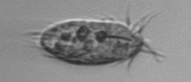
Euplotes morphotype1

Eutintinnus

Favella

Laboea strobila

Leegaardiella ovalis

Pleuronema sp

Stenosemella pacifica

Stenosemella sp1

Strobilidium morphotype1
Strombidium capitatum

Strombidium conicum

Strombidium inclinatum

Strombidium morphotype1
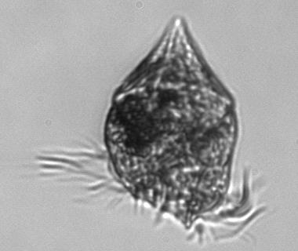
Strombidium morphotype2
Strombidium oculatum

Strombidium wulffi

Suctoria
Tiarina fusus

Tintinnidium mucicola
Tintinnopsis
Tontonia appendiculariformis

Tontonia gracillima

Coccolithophore
Acanthoica quattrospina

Calciopappus

Calciosolenia brasiliensis

coccolithophorid

Emiliania huxleyi

Ophiaster

Rhabdosphaera

Syracosphaera pulchra

Diatoms
Asterionellopsis glacialis
Asteromphalus
Bacillaria

Bacteriastrum

Bidulphia

Cerataulina pelagica
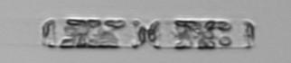
Chaetoceros
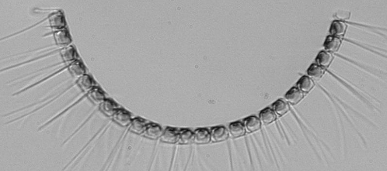
Chaetoceros curvusetus

Chaetoceros danicus

Chaetoceros debilis

Chaetoceros didymus

Chaetoceros lorenzianus
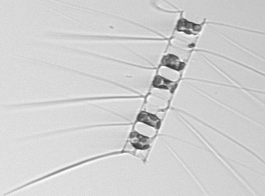
Chaetoceros similis

Chaetoceros socialis

Chaetoceros subtilis

Corethron hystrix

Coscinodiscus

Cylindrotheca

Dactyliosolen blavyanus
Dactyliosolen fragilissimus

Delphineis

Ditylum brightwellii

Ephemera

Eucampia

Guinardia delicatula

Guinardia flaccida

Guinardia striata

Hemiaulus
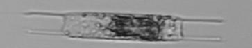
Lauderia annulata

Leptocylindrus
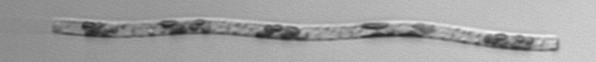
Leptocylindrus mediterraneus
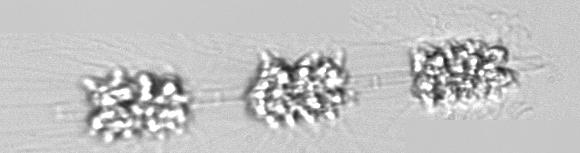
Licmophora

Odontella

Odontella mobiliensis
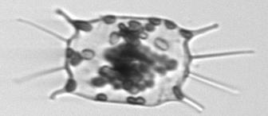
pennate

pennate morphotype1
Pleurosigma

Proboscia

Pseudo-nitzschia

Pterosperma

Raphoneis

Rhizosolenia

Skeletonema
Stephanopyxis
Striatella unipunctata

Thalassionema

Thalassiosira

Thalassiosira rotula

Dinoflagellates
Akashiwo

Alexandrium catenella
Amphidinium

Amylax

Asterodinium
Ceratium

Ceratium furca

Ceratium fusus

Ceratium lineatum

Prorocentrum morphotype 1

Dinophyceae

Dinophysis norvegica

Dinophysis

Dinophysis acuminata

Dinophysis tripos

Gonyaulax

Gyrodinium

Heterocapsa rotundata

Heterocapsa triquetra

Karenia

Katodinium or Torodinium

Lingulodinium

Margalefidinium

Podolampas

Polykrikos

Pronoctiluca

Prorocentrum micans

Prorocentrum

Prorocentrum micans

Prorocentrum triestinum

Proterythropsis sp

Scrippsiella

Spatulodinium

unknown3 squiggle

Warnowia

Flagellates
amoeba

Apedinella

Chrysochromulina

Chrysochromulina lanceolata

Corymbellus

crypto

Dictyocha
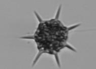
Euglena

flagellate morphotype1

flagellate morphotype3

Parvicorbicula socialis
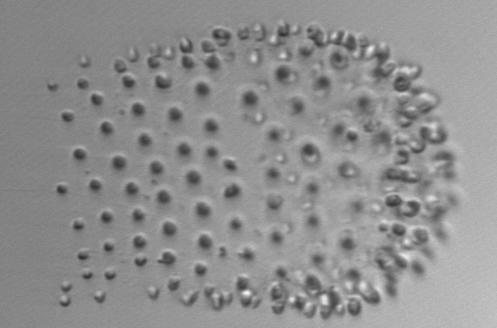
Phaeocystis

Pseudochattonella farcimen

Pyramimonas

Pyramimonas longicauda

Vicicitus globosus

Miscellaneous
bad

bead

bubble

colony

cresent

detritus

detritus clear

fecal pellet

fiber

G delicatula detritus

mix

pollen
Radiozoa

spore

unknown2

zooplankton

Plankton interactions
Chaetoceros didymus flagellate

Chaetoceros flagellate

Chaetoceros pennate

Ciliates feeding

diatoms with flagellates

Diatoms with pennates

Ditylum parasite

G delicatula external parasite
G delicatula parasite

Pallium feeder

Peduncle feeding

Thalassiosira with detritus